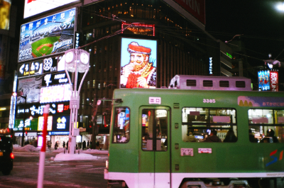

旅遊紀錄

Day1：台灣→札幌
2020/02/10
札幌市是位於日本北海道道央地區的都市，為北海道首府以及石狩振興局本部所在地，也是政令指定都市之一。
Day2：滑雪體驗
2020/02/11
札幌市是位於日本北海道道央地區的都市，為北海道首府以及石狩振興局本部所在地，也是政令指定都市之一。

Day3：星野度假村
2020/02/12
札幌市是位於日本北海道道央地區的都市，為北海道首府以及石狩振興局本部所在地，也是政令指定都市之一。
Day4：札幌→小樽
2020/02/13
札幌市是位於日本北海道道央地區的都市，為北海道首府以及石狩振興局本部所在地，也是政令指定都市之一。

Day5：小樽→函館
2020/02/14
札幌市是位於日本北海道道央地區的都市，為北海道首府以及石狩振興局本部所在地，也是政令指定都市之一。
Day6：函館滯留一天
2020/02/15
札幌市是位於日本北海道道央地區的都市，為北海道首府以及石狩振興局本部所在地，也是政令指定都市之一。
Day7：函館→台灣
2020/02/16
札幌市是位於日本北海道道央地區的都市，為北海道首府以及石狩振興局本部所在地，也是政令指定都市之一。